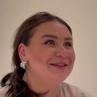

- глубокое взаимодействие
- работа с состоянием
Духовное ПереРождение
1 000 000 ₽
Месяц глубокой трансформации.
Для тех, кто готов увидеть себя иначе — и создавать жизнь из этого нового понимания.
Эта работа — не для всех. Она подходит, если:
- Вы прошли через многое — и чувствуете, что пора на новый уровень
- Хотите трансформации, а не улучшения
- Готовы работать глубоко и честно с собой
- Внешние успехи есть, но внутри — пустота или неудовлетворённость
Как проходит
-
Месяц ежедневной онлайн-работы.
Я расширяю способности вашего сознания, переформатирую ограничивающие программы, сопровождаю каждый день.
На консультации — индивидуальная программа под ваш запрос.
После трансформации
вы получите:
- Изменение восприятия себя и мира — без потери себя
- Освобождение от сценариев,
которые управляли вами - Способность создавать жизнь
из осознанного выбора - Доступ к состояниям, которые раньше казались недостижимыми
Доступ
Только после предварительной консультации.
Я должен понять запрос и убедиться,
что готов взяться.
Обратная связь
моих клиентов
Юлия
С Александром меня познакомила сама судьба… случайность, которая подарила мне полное осознание, что передо мной не просто остеопат.
С первых минут ощущения его рук я точно поняла, что Александр — великолепный энергопрактик (в моей жизни их было много, и можно сказать, я уже неплохо ‘чую’).
Во время сеанса я чувствовала, как он буквально ‘вливает’ в мое тело потоки божественной энергии.
Спустя год я прошла трехмесячную ‘перезагрузку’ (опять же, только потому, что я всем нутром чувствовала, что мне помогут).
Так и произошло — мой запрос был целиком исполнен 🤍.
Рекомендую данного специалиста от всего сердца всем, кто чувствует отклик на деятельность Александра.
Дмитрий
Я очень рад, что вообще познал, что такое остеопатия (причём качественная!). На самом деле хочу тебя поблагодарить за твою работу.
Когда идёт сеанс, ощущение, что ты медитируешь просто. Расслабляется тело, напряжение будто всё уходит куда-то, вот честно будто заново рождаешься. Я не понимаю как ты чувствуешь где зажимы, что нужно проверить и с чем поработать, но я реально ходил к врачу и он все подтвердил.
А очищение головы это вообще моё любимое. Я человек тревожный и мои мысли меня с ума просто сводят, и как я обожаю это чувство, когда встаёшь после остеопатии с пустой головой и ощущением, что познал смысл бытия (как я это называю). А еще по секрету - все мои запросы, которые я делал перед сеансом, каким то образом запустились и я вижу результат. В общем, хотел сказать тебе большое спасибо!
Елена
С Александром познакомились 3 года назад. Александр классный специалист и очень душевный человек. Прекрасное восстановление, и результат налицо.
Я прохожу сеансы биоэнергетического восстановления. После таких сеансов восстанавливаются жизненные силы, энергия, настроение улучшается. В общем чувствую себя замечательно. После первого же сеанса ушла боль и тяжесть в правом боку, тело стало уютным и безболезненным. после второго - те же ощущения, чуть позже стала "ныть" поясница, на второй день боль прошла! С ней же исчезла стреляющая боль от правой лопатки в висок)
Благодаря Вам отдых прошёл без осложнений! Благодарю Вас, Александр, мне хорошо, и это так здорово и приятно! Всем рекомендую!
Николай
Александр - прекрасный специалист! После сеанса остеопатии такое чувство, что заново родился, легкость в теле и прилив энергии, давно такого не ощущал! За время сеансов прошли боли в пояснице, которые давали о себе знать на протяжении нескольких лет. Вообще в нашем городе это известный остеопат. За три сеанса в моём случае все как рукой сняло. На сеанс я буквально приполз, сейчас уже нормально иду, боли в спине стали уже меньше.
Также после сеанса исцеления я понял, что у меня открываются новые пути на которых как казалось бы, нет ни сил, ни финансовых ресурсов. Я понял в каком направление могу двигаться. И самое главное - начал реализовывать задуманное. Смело рекомендую данного специалиста тем, кто ищет лучшего остеопата в нашем регионе (да и не только в нашем!)
Никита
Саша, привет! Очень давно уже искал мастера, который может эффективно и просто «как рукой снять» всю херню, что налипла на ментал и физику. И очень благодарен ,что встретил именно тебя, доброго, мощного, принимающего и помогающего самому себя принять, - реального целителя, после встречи с которым процесс жизни и самоощущения улучшился, а многие процессы реально сдвинулись с полного мертвяка!
Хочу от сердца поблагодарить тебя за эту помощь и поддержку, особенно в трудное пред и пост операционное время, так держать, обязательно буду почаще проходить техосмотры!
Мария
Доброе утро. Александр, этим воскресным утром хочется оставить отзыв. Про боли и онемение я уже писала, что их стало меньше, так все и осталось. Хочу сказать по поводу отношений и подарочек: от конфеток до колечка с бриллиантами) Работа с телом и биополем дало свои ПЛОДЫ! Плюс смена работы, которая дополнительно высасывала мои силы. Спасибо Вам ещё раз, что подарили тогда такую возможность попасть на приём!